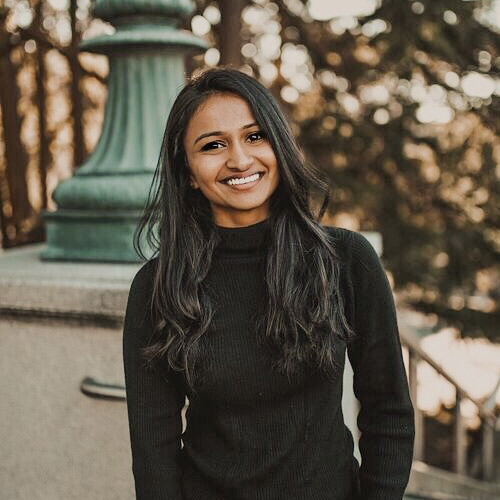
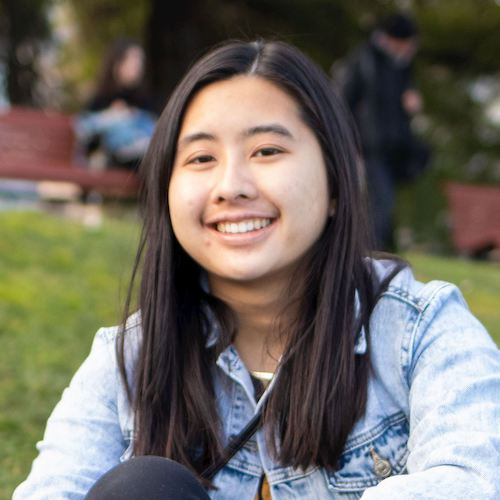

Staff
Instructors¶
Teaching Assistants ((u)GSIs)¶
 Aanika Shah (bio) I'm a senior studying IEOR and Data Science with an emphasis in industrial and business analytics. This is my second semester on staff as a UGSI for this amazing class! I love watching sports, traveling, playing board games (Catan!!), and listening to music.
aanika.shah@berkeley.edu
|
 Aidan De Angelis (bio) I'm a 5th year Computer Science major from Davis, CA. I took Data 8 my Fall semester freshman year and I absolutely fell in love with it. I've since tutored for 3 semesters and this will be my 4th semester as a TA. In my free time I like to hike, play paintball, and scope vibes. I hope you come to love Data 8 as much as I do!
aidandeangelis@berkeley.edu
|
Alan Liang (bio) Hi! I am a EECS Masters student, previously having majored in Economics and CS at Cal as well. I'm sort of from Shanghai, and some things I enjoy include discovering good food, shibes, consumerism, and data science; guess which one is my favorite ;). Looking forward to a great semester and e-meeting you all!
alanliang@berkeley.edu
|
 Alan Rosenthal (bio) I'm a 5th year master's student in EECS, and before that I did my undergrad here studying math and CS. This is my 6th semester as a TA and my 3rd for Data 8! Outside of school and work, I love cooking, badminton, and playing/composing music.
amrosenthal@berkeley.edu
|
 Alvin Yu (bio) Hi friends! I'm a senior studying business and data science and I love playing basketball, going for runs, watching Avatar the Last Airbender, and helping others learn. My Berkeley starter-pack includes the 8th floor of Unit 1 Putnam, Doe Library, GBC's chicken quesadillas, Sheng-Kee buns, and the homies on Benvenue, College, Channing, and Center.
alvinyu27@berkeley.edu
|
An Ju (bio) Hi! I'm a Ph.D. student, and I study the robustness of artificial intelligence models. I also worked on analyzing and visualizing data for automated teaching and tutoring. I'm looking forward to a great semester as a first-time Data 8 GSI!
an_ju@berkeley.edu
|

Ananya Krishnan (bio) Hey! I am a senior studying cognitive and computer science from sunny San Diego. I am interested in learning about data visualization, economics & finance and decision making. In my free time, I enjoy watching TED Talks, going on hikes, attempting to bake, and eating lots of ice cream. I am excited to be part of the Data 8 staff this year and hope to e-meet you this Fall!
ananya.krishnan@berkeley.edu
|
Angela Guan (bio) My name is Angela Guan, and I am from San Jose, CA. I am a 4th year studying Data Science, and I love Data 8! I am on the Cal Table Tennis team, and I enjoy going to beaches, hiking, cooking, traveling, and eating with friends. Looking forward to meeting you!
guanangela@berkeley.edu
|
|
Angela Zhou (bio) Hello!! I am a fourth-year studying data science with a domain emphasis in cognition. I came to UC Berkeley to follow in the footsteps of my Albuquerque alumni, Troy Bolton. In my free time, I love to binge Netflix (I know almost all the words to HIMYM and Friends), listen to music (I really like EDM and alternative indie), and get boba with my friends. If you ever have any questions or just want to talk, please feel free to reach out! :)
zhoa210@berkeley.edu
|
 Brett Irvin (bio) I am a senior studying Business and minoring in Data Science. I'm from the LA area and I love to workout with friends and learn about training methods. I look forward to an awesome semster!
brettirvin@berkeley.edu
|
Caroline Chen (bio) I'm currently a senior double majoring in Statistics and Data Science. This is my 6th semester on Data 8 staff, and I'm super excited for this semester!
carolinejchen@berkeley.edu
|
Celine Chen (bio) Hi everyone, I'm a fourth year studying Sociology & Cognitive Science with a minor in Data Science. I'm originally from Fremont, CA and have lived in the Bay Area all my life. Data 8 has been one of my favorite courses during my time here at Cal and I'm so excited to be part of staff again this semester, hope you love it as much as I do!
celinechen_99@berkeley.edu
|
|
Chendi Wu (bio) Hi all! I'm a senior studying computer science and data science. I love reading (especially detective stories), anything matcha and fluffy animals. I always twist my tongue when saying "test statistics".
chendiw@berkeley.edu
|
Connor Clark (bio) I am a senior from Burlingame, California studying data science with an emphasis in applied math and modeling. I love baseball, skiing, surfing, and anything else outdoors. One day I hope to work in management for a professional sports team.
connorcclark@berkeley.edu
|
 Danyal Shahroz (bio) I'm a third year studying Data Science with a domain emphasis in cognition. Data 8 is one of my favorite classes I've ever taken. Some of my interests are eating food, traveling, and listening to music. Looking forward to a great semester!
dshahroz@berkeley.edu
|
 Deven Barth (bio) I'm a fourth year student majoring in data science and minoring in computer science. Prior to coming to Berkeley, I grew up in Kentucky, Arizona, as well as the Bay Area itself, and currently I'm working out of Marin County, CA (just north of SF). This will be my second time as a uGSI for Data 8 and I'm looking forward to another great semester!
devennb@berkeley.edu
|
 Ellen Persson (bio) Coming back to Data 8 for my fourth semester on staff, I'm a junior majoring in Engineering Mathematics and Statistics. I'm a Bay Area native, though I was born in Stockholm, Sweden. In my free time, I play Ultimate Frisbee with the women's team here on campus. I'm super excited to be a part of Data 8 this semester, and I hope you all have a great time taking it!
nellepersson@berkeley.edu
|
 Emily Zou (bio) Hi everyone! I am a fourth year CS major from the DC area. In my free time, I enjoy skating with the Cal Figure Skating Team, figuring out new ways to make coffee, and making restaurant-quality food for my foodstagram. Check it out: @zoumuchfood!
emilykzou@berkeley.edu
|
Erika Mack (bio) I am a fourth year data science major with a psychology domain emphasis. This will be my 5th semester on data 8 staff and my first as a uGSI.
erika.n.mack@berkeley.edu
|
 Eshaan Soman (bio) Hi everyone! I'm a junior studying CS and this will be my third semester on staff. I really like Data 8 related jokes. On a scale of 1-10, I'd r8 my humor a (Data) 8.
eshaansoman@berkeley.edu
|
 Franco Achacoso (bio) Hey everyone! My name is Franco Achacoso, I'm from Los Angeles (closer to Culver City), and I'm happy to be teaching Data 8 in my last semester before completing my Data Science degree with a domain emphasis on Businesses and Industrial Analytics. I like playing volleyball, playing video games like League, Osu, and Valorant, and most importantly teaching Data 8! Since Data 8 was my first time coding, it holds a dear place in my coding heart and I hope I can help give you the same kind of experience I had!
fachacoso@berkeley.edu
|
Grace Li (bio) I'm a 4th year statistics and computer science major that bakes and cooks quite a bit. Looking forward to meeting all of you virtually this semester!
fqzbdkh@berkeley.edu
|
 Gregory King (bio) Live. Laugh. Linear Regregssion.
gregking22@berkeley.edu
|
|
|
Ian Castro (bio) I'm a fourth-year majoring in Media Studies and Microbial Biology from the East Bay Area. My interests are in diversity, equity, and access to STEM in higher education, and I work on various other projects with the Data Science Education Program including Data 6 and Info 290. This will be my 6th semester on Data 8 staff; Data 8 has been one of my favorite classes in undergrad, and I hope I can help you feel the same!
castro.ian@berkeley.edu
|
Jifu Li (bio) Look at you, looking at me.
jifu.li@berkeley.edu
|
 Kanika Ahluwalia (bio) Hi all! I'm a 4th year studying Data Science from SoCal. In my spare time, I enjoy watching travel vlogs, exploring new coffee shops (my favorite has to be Philz), and hiking to see sunsets/sunrises with friends. This is my second time being a uGSI and I am super excited to meet you all!
kwalia1999@berkeley.edu
|
Katherine Tsai (bio) Hi everyone! I am a senior from Palos Verdes, CA studying Data Science and Cognitive Science. In my free time I like to take naps, dance, or get gelato with friends. Data 8 has been one of my favorite classes so far, and I am excited to get to know everyone this semester!
katherinetsai@berkeley.edu
|
 Kevin Hsu (bio) Hi! I'm a junior from San Jose, CA studying computer science. In the few hours that I'm not staring at my laptop, I enjoy biking around, baking, and hiking. Other than tutoring for Data 8, I've previously been involved with Data 100 and CS 170 staff. This is my first semester TAing, and I'm looking forward to getting to meet all of you!
kevin.hsu@berkeley.edu
|
Logan Ritter (bio) I am a senior majoring in Computer Science with a minor in Data Science. I was born and raised in Northeast Ohio. I spend my free time hiking, biking, playing ultimate frisbee, and hanging out with my roommates. I also love listening to music. I am excited to meet you all virtually!
lritter@berkeley.edu
|
Margaret Misyutina (bio) Hi everyone! I'm a junior from San Diego majoring in Data Science and minoring in Computer Science. I absolutely LOVE teaching Data 8; this is my fifth semester on staff! In my free time I enjoy exploring SF, watching sunsets, petting cats, and making smoothies :)
marmis@berkeley.edu
|
 Meghan Wang (bio) Hi everyone! I'm a third year studying Industrial Engineering and Operations Research. I'm originally from SoCal but have loved exploring the Bay Area! Outside of classes, I enjoy sewing, re-watching Marvel movies, and finding new music.
meghanwang@berkeley.edu
|
|
Melissa Wong (bio) Hi!!! I'm a third year studying Computer and Data Science, and I'm so excited to be a uGSI for the Fall 2020 semester! I fell in love with Data 8 when I took it my first semester at Cal and I hope I can make your experience as great as mine was (: I'm originally from SoCal and I love talking Marvel, design, and web dev. See you all on ~zoom~!
melissarwong@berkeley.edu
|
Nancy Wang (bio) Hi! I'm a junior studying Data Science and Political Economy. I've been teaching Data 8 since my freshman year and it's been one of my favorite classes at Berkeley! In my free time I love watching random 2000s movie trailers on Youtube, trying wacky food combinations, and exploring Berkeley!
nancywang@berkeley.edu
|
Nichole Sun (bio) Hi! I'm Nichole, a senior majoring in Data Science with a concentration in Applied Math. I'm a SoCal native and in my free time, I love playing volleyball, watching the Bachelor, and hammocking on the glade.
nicholesun@berkeley.edu
|
Olivia Lewke (bio) Hello! I am a senior double majoring in English and Data Science. If I'm not complaining about how cold it is here, I'm probably reading, playing Animal Crossing, dogwatching on the glade, or spending too much money on UberEats at 3am. This will be my fifth semester on Data 8 staff. This course made me fall in love with data science and I hope that it will do the same for you!
olivialewke@berkeley.edu
|
 Parham Rouzbahani (bio) A friendly reminder that the Toronto Raptors are your 2019-2020 NBA Champions. Without that out of the way, I'm a business & data science loving junior from Toronto, Canada, eh? I'm a huge fan of dogs, board games, travelling and snow.
parouz@berkeley.edu
|
 Pratibha Sriram (bio) Hi! My name is Pratibha and I am a senior CS major from San Jose. I enjoy napping, eating potatoes, bad jokes, and giraffes. Super excited for this semester of Data 8 with you all!
pratibha99@berkeley.edu
|
Rita Wang (bio) I just finished my second year majoring in Computer Science and Data Science. In my free time, I like to explore photography, videography, listen to music, and watch movies. My friends say that I like to give sales-pitch on things (such as laptops, tablets, electronics) I am passionate about, so if you want to experience what it is like to be given a sales-pitch, hit me up.
ritawang@berkeley.edu
|
Robbie Netzke (bio) I'm a 4th year Applied Math major with a concentration in econ. I like to go to the beach and hang out with my friends in my free time, and , most of all, I like to talk about data 8!!
netzke@berkeley.edu
|
 Roshan Srinivasan (bio) Hi there! I too stalk my GSIs on Facebook and LinkedIn. Kudos to you if you can find my TikTok profile.
roshansrin01@berkeley.edu
|
Ruhi Doshi (bio) Hi! I'm Ruhi, a third year Data Science and Operations Research major from Minnesota. I'm excited for my fourth semester on staff! I love hiking to new spots (currently exploring new parts of the fridge!), playing board games (online and offline), and endlessly rewatching every Marvel movie. Say hi—I'm always down to chat!
rdoshi99@berkeley.edu
|
Sam Wu (bio) Hey there! I am a senior studying Computer Science and Statistics, and this will be my sixth semester on course staff and fourth semester as a uGSI for Data 8! I'm from Vancouver, Canada, and I love to learn about the different cultures of the world (I speak English, Mandarin, and French)! Hit me up if you like anime, food, traveling, or learning new languages!
samwu101@berkeley.edu
|
 Sarthak Arora (bio) Hello! I am a third year Data Science and Computer Science major from Mumbai. I love sports, binge watching Friends/HIMYM, and good food. Looking forward to a great zoom semester!
sarthakarora@berkeley.edu
|
|
Saurav Mittal (bio) hi. d8 is a fun course and this is my sixth time on course staff but other than that im just another ethanol enthusiast trying to get through an online semester.
saurav@berkeley.edu
|
 Sophia Tan (bio) Hi everyone! I'm a fourth year from SoCal studying Molecular and Cell Biology and Data Science. I love binge-watching (and rewatching) shows, sunsets, and puzzles! I'm excited to meet you all and hope you enjoy the class!
sophiatan@berkeley.edu
|
Stephanie Djajadi (bio) Hello! I'm a fourth-year studying computer science and data science. I love dogs, trying new foods, and traveling. I really enjoyed Data 8, and I'm looking forward to a great semester!
sdjajadi@berkeley.edu
|
Sunny Shen (bio) Hey guys! I'm a junior studying Economics and Data Science. I love Data 8 and I hope to make your (remote) Data 8 experience as pleasant as possible :) I love photography, singing, and traveling. I'm always down to chat about Data Science or life and learn about your intelligent minds!
sunnyshen@berkeley.edu
|
|

Tamara Vilaythong (bio) Tacos, athletics/enjoying virtual t-rock thursdays but everyday, music (https://youtu.be/WI0mSEzttx8). Comp Sci senior from San Diego, been on course staff for 5 semesters, lead TA for 3 semesters now. I rewatched the movie Cars eight times in April 2020 (im fine, kachow).
tvilayth@berkeley.edu
|
Vaibhav Pabreja (bio) 1 part cognitive science, 1 part data science, 2 parts geek, 3 parts musician. Too many parts? Hi, I'm Vaibhav, but I go by VP. I am an international student hailing from Dubai (yes, its true, we ride camels to work). I'm super excited to meet y'all!
vaibhav.pabreja@berkeley.edu
|
 Vikram Chandran (bio) Hey everyone! I'm a chocolate volcano and ping pong lover who watches too much Netflix & HBO. The Dark Knight is my favorite movie of all time. I'm also a competitive swimmer!
vikramchandran@berkeley.edu
|
 Winifred Chung (bio) I'm a fourth-year Data Science major from sunny San Diego. I love spending copious amounts of time at the beach, getting lost in nature, curating Spotify playlists, and impulsively buying concert tickets. Hope you enjoy this class just as much as I did!
winifredchung@berkeley.edu
|
 Yanay Rosen (bio) I am a fourth year majoring in Computer Science and minoring in Data Science. I was born in Israel but grew up in the suburbs around Boston. This is my fourth semester as an uGSI and seventh semester on staff. I love Data 8 and hope you will too!
yanayrosen@berkeley.edu
|
 Yash Swarup Agarwal (bio) Hey there! I'm a senior majoring in Computer Science. This is my fifth semester with Data 8 and my third time as a uGSI! Data 8 has been a personal favorite since freshman year and I hope you all love the class as much as I did. If you get a chance, shoot me an email and say Hi!
yashswarup@berkeley.edu
|